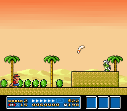

SUPER MARIO BROS. 3
Wiki
Levels
World 2
| World | Image | Overview |
|---|---|---|
| World 2-1 |
The first level of Desert Land. The level introduces Pile Driver Micro-Goombas and Firesnakes. |
|
| World 2-2 |
 |
This level features a hilly area with many quicksand fields and an oasis filled with Cheep-Cheeps. |
| World 2-  |
 |
The fortress of Desert Land is a two-story building with several enemies inside. This fortress introduces Thwomps and "Boo" Diddlys. |
| World 2-3 |
This level features small pyramids composed of blocks and platforms. |
|
| World 2- |
 |
This level is filled with quicksand pits. A rare enemy called Angry Sun resides in this level and will follow the player through the whole level. |
| World 2-4 |
This level features an upper and lower path. To access the upper path, the player needs to be powered up with the Super Leaf at the very beginning of the level. |
|
| World 2-5 |
 |
A level that takes place in the open desert area. This level introduces the Chain Chomp. |
| World 2- |
 |
The player begins this level in an open area, with a door that takes the player inside a big pyramid. The interiors of the pyramid are composed of an underground maze filled with Buzzy Beetles. |
| World 2-  |
 |
The second airship level in the game, with Morton Koopa Jr. as the boss. This level includes a cannon, Turtle Cannons, and introduces Rocky Wrenches. |
| World 2-  |
 | Two Boomerang Brothers travel the main area of the map. Both of their arenas feature one Boomerang Bro on a ledge that the player needs to defeat. Defeating one Boomerang Bro will award the player with a Hammer and defeating the other Boomerang Bro will award the player with a Music Box. |
| World 2- |
One pair of Fire Brothers move around in the hidden oasis area of the map, accessible by destroying a rock near World 2-4 with a Hammer. Their arena is the same as the Boomerang Brothers, though with one Fire Bro at ground level. Defeating the two Fire Brothers will reward the player with the third and final Magic Whistle. |